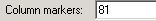
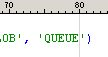

Text -> Column Markers
Previous
Top
Next
Show or hide column marker line. Position of line depends of configuration. For example :
With  position is 
See
Text Menu
,
Tools -> Application/Editor Settings...